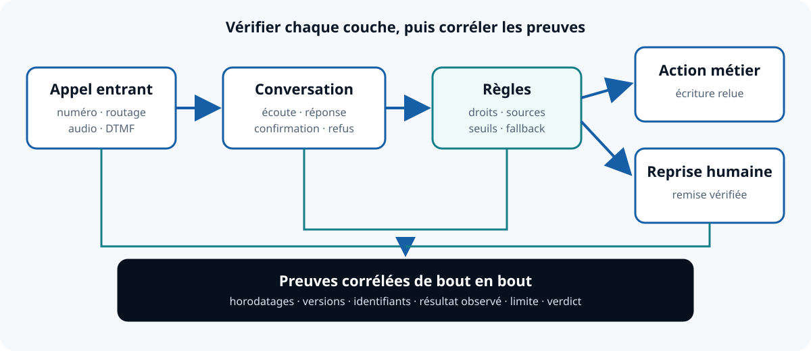

1. Figer le besoin
Décrivez l’appel, les données autorisées, l’action attendue, le transfert et l’issue en cas de panne.
Ressource ouverte · mise à jour le 20 août 2026
Ce kit aide une équipe métier et technique à comparer des options sur un même parcours d’appel. Il fournit 12 critères publics, des statuts de preuve et 12 scénarios de test. Il ne classe aucun fournisseur et ne transforme jamais une information absente en échec.
Commencez par un scénario métier précis, puis demandez la même preuve à chaque option évaluée. Une documentation éditeur, un test reproductible et un engagement contractuel ne sont pas des preuves équivalentes. La conclusion doit rester « indéterminée » si un critère bloquant manque de preuve.
Décrivez l’appel, les données autorisées, l’action attendue, le transfert et l’issue en cas de panne.
Conservez la source, sa date, la version testée, le résultat brut et les limites d’observation.
Compatible, compatible sous condition, incompatible ou indéterminé. Pas de moyenne qui masque un blocage.
À ne pas confondre : ce kit est un protocole de préparation. Les scénarios n’ont pas été exécutés sur Omnira dans cette ressource et ne prouvent aucune performance, disponibilité, sécurité ou conformité.
Chaque cellule reçoit un statut, une source et une date. Le CSV téléchargeable ajoute des colonnes pour le scénario, le caractère bloquant, le propriétaire de la vérification, l’échéance et la conclusion.
| Critère | Question à trancher | Preuve attendue |
|---|---|---|
| 1. Couverture fonctionnelle | La tâche complète est-elle incluse, configurable ou à développer ? | Test bout en bout et résultat relu dans l’outil métier. |
| 2. Téléphonie et média | Qui exploite numéro, routage, DTMF, transfert et fallback ? | Schéma du parcours et essais nominaux et dégradés. |
| 3. Conversation vocale | Comment sont gérés bruit, silence, interruption et confirmation ? | Fixtures audio, journaux horodatés et résultats bruts. |
| 4. Outils et vérité opérationnelle | L’action annoncée est-elle réellement confirmée ? | Identifiant d’opération, réponse API et relecture cible. |
| 5. Connaissances et refus | Que se passe-t-il si une information manque ou se contredit ? | Sources versionnées, cas absent, contradictoire et obsolète. |
| 6. Transfert humain | Quelle reprise si personne ne répond ? | Test de remise, contexte transmis et test de non-réponse. |
| 7. Données et sécurité | Quels flux, accès, sous-traitants, durées et usages ? | Cartographie, contrats applicables et contrôles vérifiés. |
| 8. Exploitation | Qui surveille, corrige et valide les changements ? | Rôles, alertes, journal de changement et exercice d’incident. |
| 9. Robustesse | Comment la panne d’une dépendance se propage-t-elle ? | Nomenclature, limites, tests de panne et stratégie de repli. |
| 10. Réversibilité | Peut-on restaurer une version connue et sortir proprement ? | Export relu, restauration testée et procédure de rollback. |
| 11. Coût complet | Quelles unités et prestations couvrent le même service ? | Tarif daté ou devis, hypothèses, taxes et services tiers. |
| 12. Preuves et support | Qui corrige un écart et avec quel niveau d’engagement ? | Tests, documents applicables, support et historique. |
Statuts proposés : VÉRIFIÉ_PAR_TEST, ENGAGEMENT_DOCUMENTÉ, DOCUMENTÉ_PAR_L’ÉDITEUR, DÉCLARÉ, NON_TESTÉ, NON_DOCUMENTÉ, NON_APPLICABLE, CONTRADICTOIRE et PÉRIMÉ.
Les fichiers sont fournis sans inscription. Ils peuvent être adaptés au scénario réel, à condition de conserver les sources, dates, versions et limites.

La méthode reprend des principes de gestion du risque, de sécurité des systèmes d’IA et de protection des données. Les sources ont été consultées le 20 août 2026. Elles cadrent des questions à poser ; elles ne certifient ni Omnira ni un fournisseur évalué.
Aucune mesure comparative issue d’une campagne homogène n’est disponible dans ce kit. Publier un taux de réussite, une latence ou un gain sans corpus, instrumentation, environnement et résultats bruts comparables créerait une précision trompeuse. Les fichiers servent à produire ces preuves, pas à les remplacer.
Le kit ne remplace ni une recette complète, ni un audit de sécurité, ni une analyse contractuelle ou juridique. Les seuils, scénarios, données de test, rôles et critères bloquants doivent être validés pour le contexte réel. Indexation effective inconnue : la disponibilité publique, le sitemap et le canonical ne prouvent pas une indexation Google.
{kind=link}